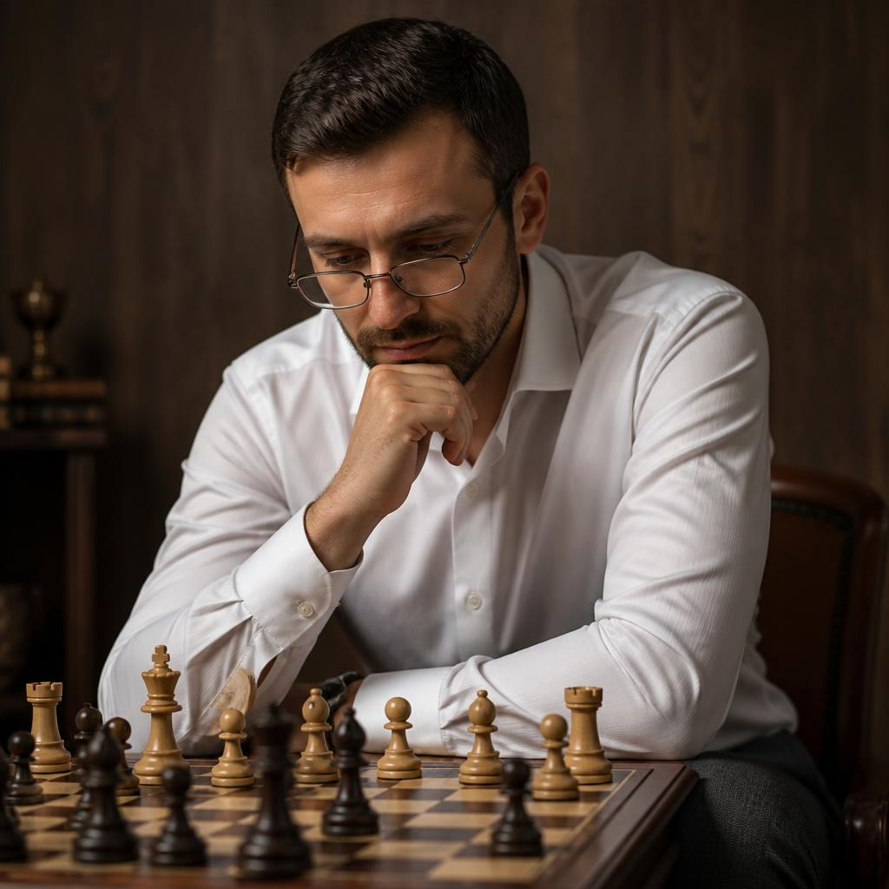
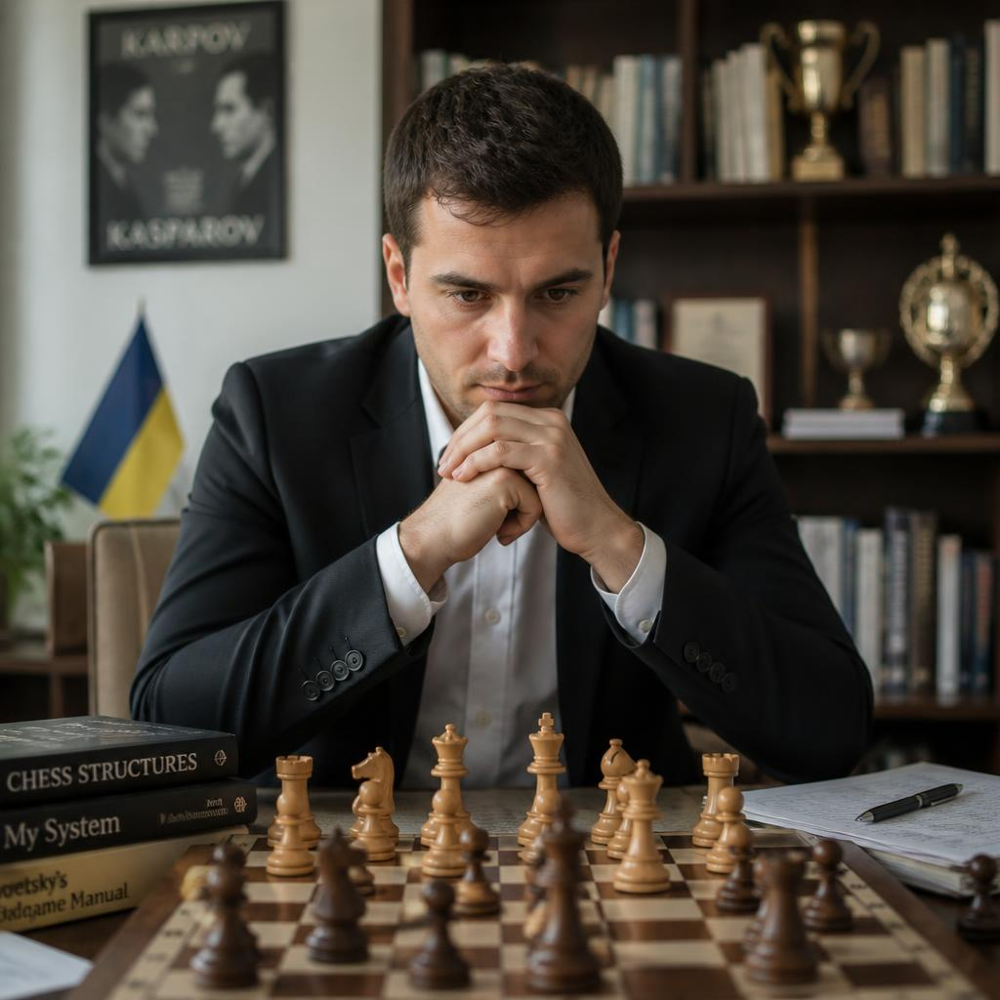
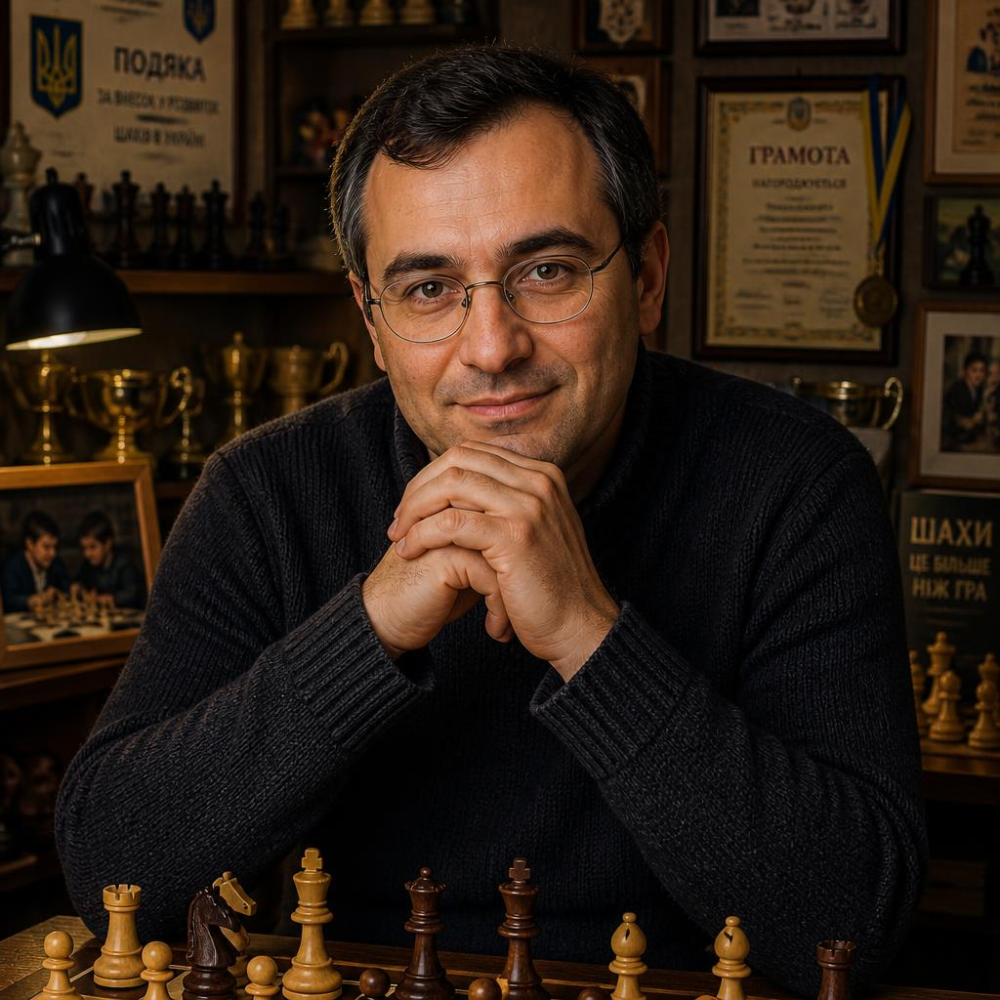
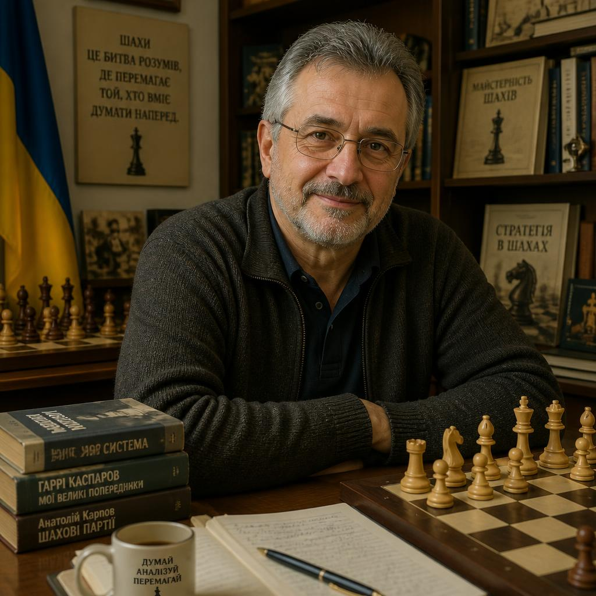
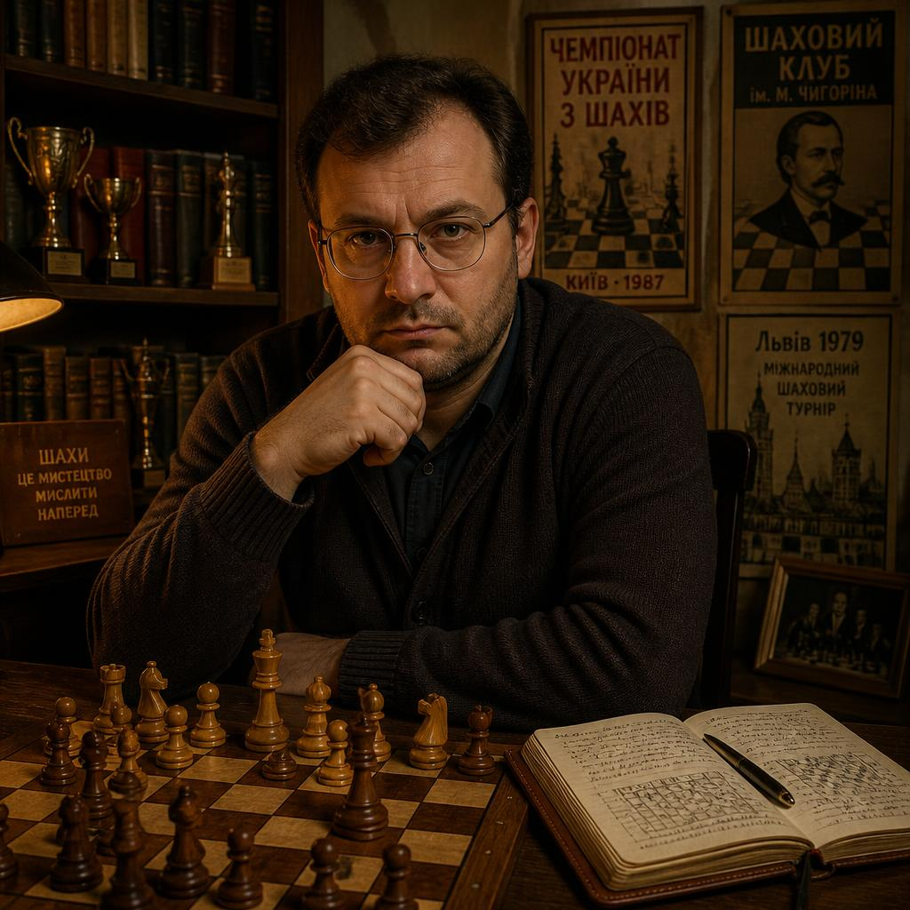
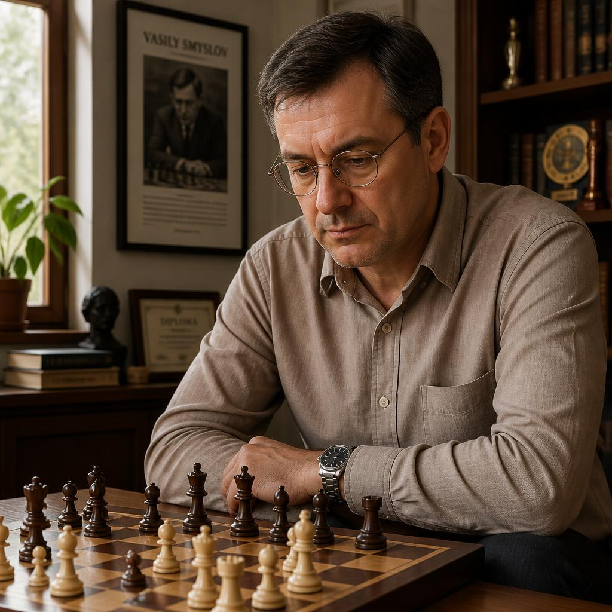

Шахи — одна з найдавніших та найпопулярніших інтелектуальних ігор у світі, яка виникла в Індії в VI столітті (чатуранга). Гра поєднує в собі елементи мистецтва, науки та спортивної стратегії. Партія проходить на дошці з 64 клітин між допоміжними суперниками. Найпрестижніші змагання: Матч за звання чемпіона світу, Всесвітня шахова олімпіада та турніри серії Grand Chess Tour під егідою FIDE. Найкращі гросмейстери в історії — Гаррі Каспаров, Магнус Карлсен, Боббі Фішер. Шахи неймовірно розвивають стратегічне мислення, пам'ять, логіку та концентрацію.


Кожен гравець починає партію з 16 фігурами: один король, один ферзь, дві тури, два слони, два коні та вісім пішаків. Мета гри — оголосити мат королю суперника, тобто поставити його под невідворотний удар. Ходи виконуються по черзі, пропускати хід заборонено. Окрім класичного контролю, грають у рапід (швидкі шахи) та бліц, де час суворо обмежений шаховим годинником. Якщо у гравця закінчується час, він автоматично програє, якщо тільки у суперника є достатньо фігур для мату. Також партія може завершитися нічиєю (пат чи вічний шах).
Професіонали, які допоможуть вам досягти ідеального результату

Артем Данилов — Шахи. Досвід: 10 років. Спеціалізація: агресивні дебюти, комбінаційний зір, атака на короля. Досягнення: міжнародний майстер, багаторазовий призер відкритих європейських турнірів. Про себе: «Навчу бачити приховані тактичні удари, жертвувати фігури заради ініціативи та розривати оборону суперника з перших ходів».

Валерій Кравцов — Шахи. Досвід: 13 років. Спеціалізація: глибокий ендшпіль (фінал партії), позиційне маневрування, реалізація переваги. Досягнення: гросмейстер України, виховав двох чемпіонів міста серед юніорів. Про себе: «Покажу, як вигравати абсолютно рівні позиції, правильно розташовувати фігури та доводити партію до технічної перемоги».

Андрій Воронець — Шахи. Досвід: 9 років. Спеціалізація: міцна захисна тактика, побудова глухих оборонних структур, виграш за часом. Досягнення: майстер спорту, спеціаліст з онлайн-бліцу високого рівня. Про себе: «Навчу створювати непробивні захисні бастіони, впевнено сушити позицію під тиском та змушувати суперника марнувати весь свій час на пошук рішень».

Дмитро Семенюк — Шахи. Досвід: 6 років. Спеціалізація: дебютна підготовка за обидва кольори, аналіз партій на рушіях, розбір помилок. Досягнення: дипломований спортивний аналітик, кандидат у майстри спорту. Про себе: «Допоможу вибудувати твій персональний дебютний репертуар та закрию всі прогалини у розумінні міттельшпілю».

Микола Федорчук — Шахи. Досвід: 5 років. Спеціалізація: робота з дітьми та початківцями, розвиток логіки, базове просторове мислення. Досягнення: дитячий шаховий інструктор, організатор шкільних ліг. Про себе: «Пояснюю складні шахові закони простими словами, вчу бачити загрози суперника та ставити перші красиві мати».

Леонід Гордієнко — Шахи. Досвід: 11 років. Спеціалізація: психологічна підготовка до турнірів, тайм-менеджмент у бліці, вихід із критичних позицій. Досягнення: майстер ФІДЕ, капітан збірної університету. Про себе: «Навчу зберігати холодну голову в стресових ситуаціях і знаходити слабкі місця в психології суперника».